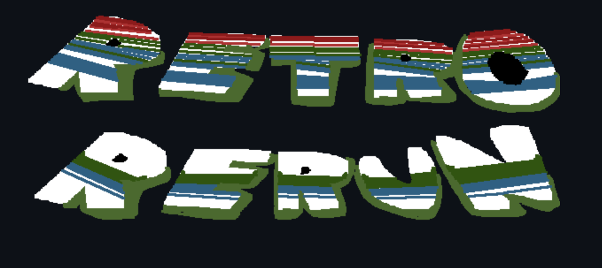
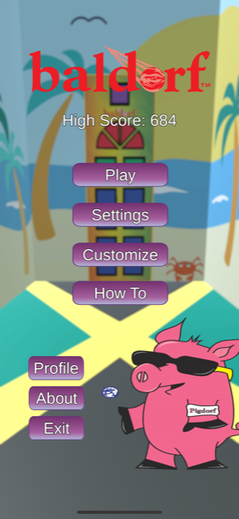
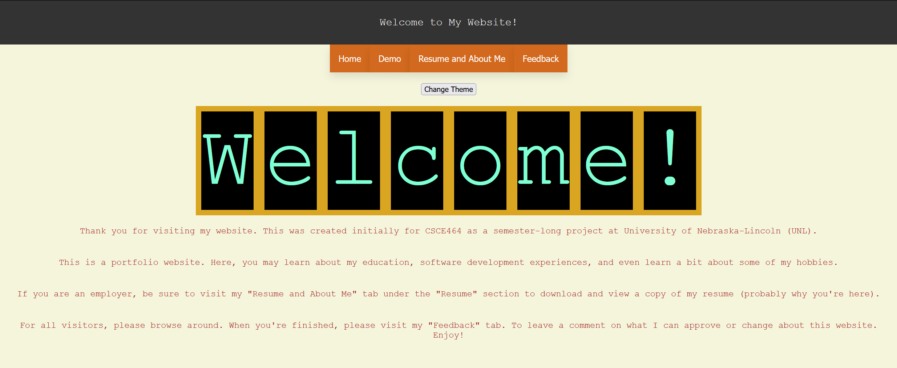

Here are some of the projects I've worked on throughout my time here at UNL:

A Super Mario inspired platformer created for Cornhacks 2022. It uses parody designs and themes of classic retro games such as Asteroids, Donkey Kong, and Pac-Man.

A fun ball bouncing game created for the Senior Design Program through Mystics Rhoads Producstions (MRP). The objective is to hit the glowing panels on the door for as long as you can without dropping the ball.
The Sepsis Determination Algorithm using the API, OpenMRS, for the UNL 2020-2021 Software Capstone Project. A project the caused many a headache during the confusing online only pandemic era of college.

Finally... hey wait a second. Haven't we seen this before? Oh right. It's the CSCE464 semester-long course project website that you're currently on. Good stuff!